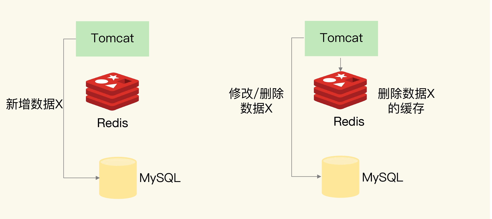
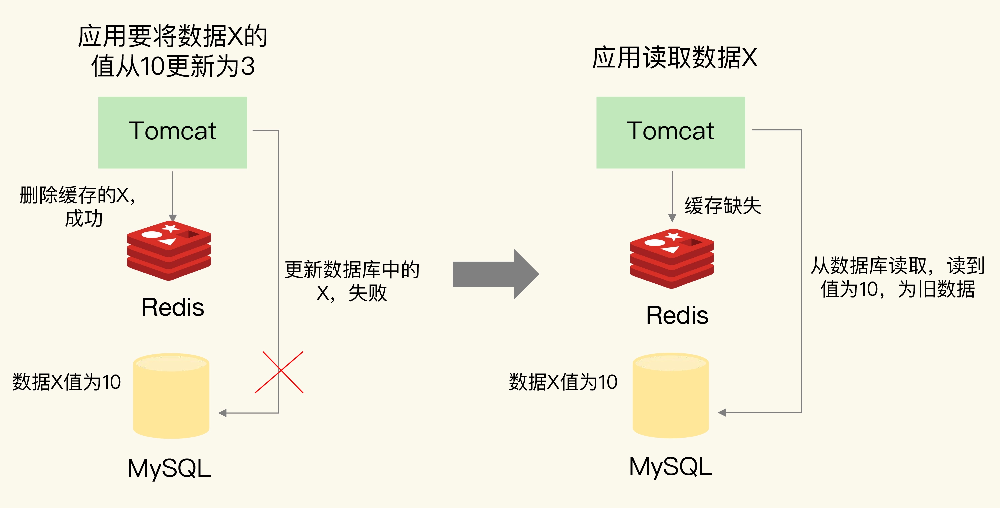
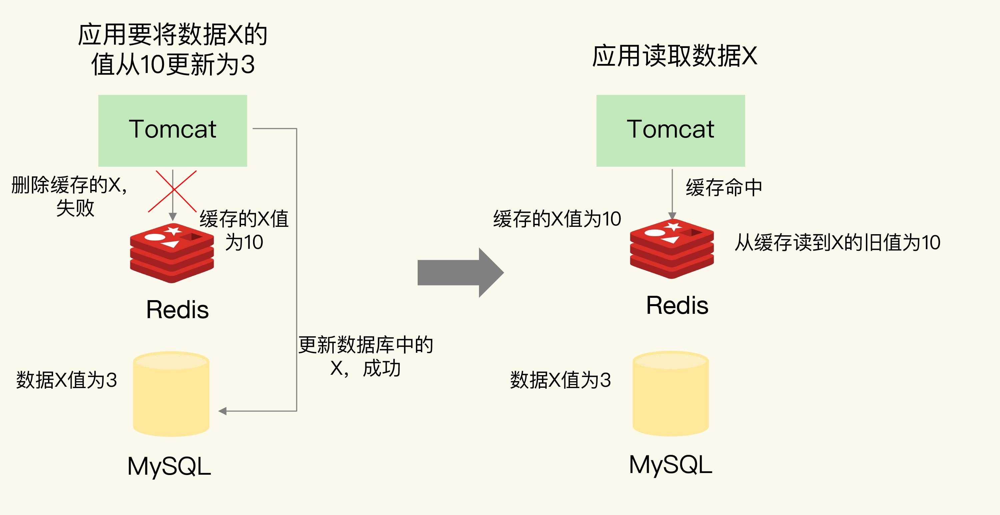
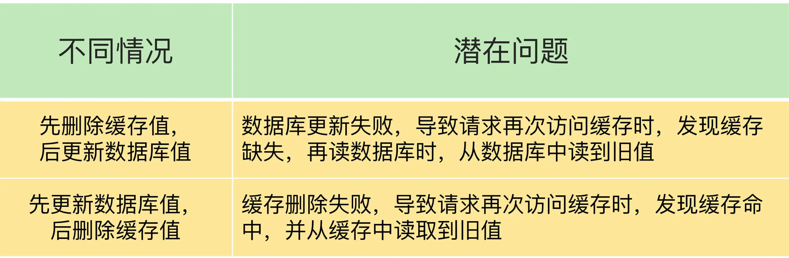
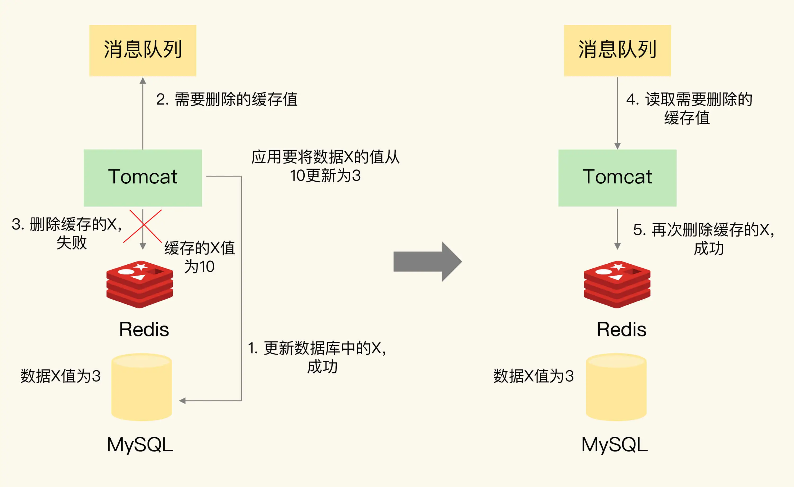
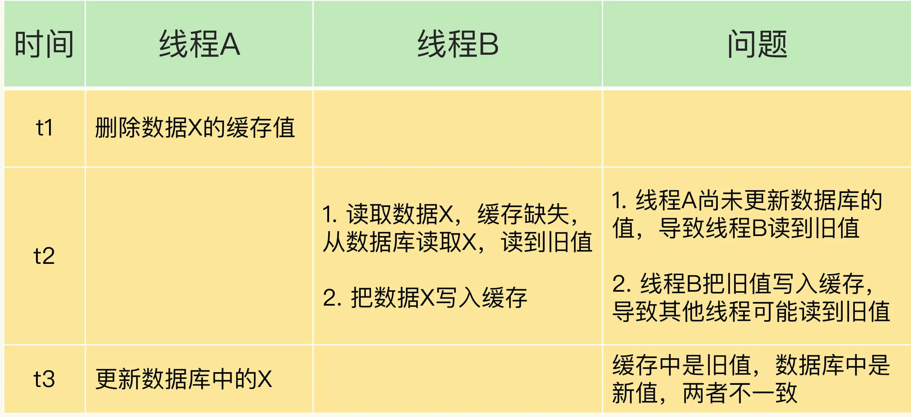
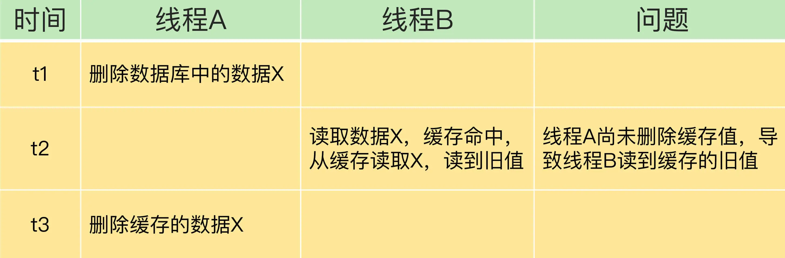

- 00 开篇词 这样学Redis，才能技高一筹.md.html
- 01 基本架构：一个键值数据库包含什么？.md.html
- 02 数据结构：快速的Redis有哪些慢操作？.md.html
- 03 高性能IO模型：为什么单线程Redis能那么快？.md.html
- 04 AOF日志：宕机了，Redis如何避免数据丢失？.md.html
- 05 内存快照：宕机后，Redis如何实现快速恢复？.md.html
- 06 数据同步：主从库如何实现数据一致？.md.html
- 07 哨兵机制：主库挂了，如何不间断服务？.md.html
- 08 哨兵集群：哨兵挂了，主从库还能切换吗？.md.html
- 09 切片集群：数据增多了，是该加内存还是加实例？.md.html
- 10 第1～9讲课后思考题答案及常见问题答疑.md.html
- 11 “万金油”的String，为什么不好用了？.md.html
- 12 有一亿个keys要统计，应该用哪种集合？.md.html
- 13 GEO是什么？还可以定义新的数据类型吗？.md.html
- 14 如何在Redis中保存时间序列数据？.md.html
- 15 消息队列的考验：Redis有哪些解决方案？.md.html
- 16 异步机制：如何避免单线程模型的阻塞？.md.html
- 17 为什么CPU结构也会影响Redis的性能？.md.html
- 18 波动的响应延迟：如何应对变慢的Redis？（上）.md.html
- 19 波动的响应延迟：如何应对变慢的Redis？（下）.md.html
- 20 删除数据后，为什么内存占用率还是很高？.md.html
- 21 缓冲区：一个可能引发“惨案”的地方.md.html
- 22 第11～21讲课后思考题答案及常见问题答疑.md.html
- 23 旁路缓存：Redis是如何工作的？.md.html
- 24 替换策略：缓存满了怎么办？.md.html
- 25 缓存异常（上）：如何解决缓存和数据库的数据不一致问题？.md.html
- 26 缓存异常（下）：如何解决缓存雪崩、击穿、穿透难题？.md.html
- 27 缓存被污染了，该怎么办？.md.html
- 28 Pika：如何基于SSD实现大容量Redis？.md.html
- 29 无锁的原子操作：Redis如何应对并发访问？.md.html
- 30 如何使用Redis实现分布式锁？.md.html
- 31 事务机制：Redis能实现ACID属性吗？.md.html
- 32 Redis主从同步与故障切换，有哪些坑？.md.html
- 33 脑裂：一次奇怪的数据丢失.md.html
- 34 第23~33讲课后思考题答案及常见问题答疑.md.html
- 35 Codis VS Redis Cluster：我该选择哪一个集群方案？.md.html
- 36 Redis支撑秒杀场景的关键技术和实践都有哪些？.md.html
- 37 数据分布优化：如何应对数据倾斜？.md.html
- 38 通信开销：限制Redis Cluster规模的关键因素.md.html
- 39 Redis 6.0的新特性：多线程、客户端缓存与安全.md.html
- 40 Redis的下一步：基于NVM内存的实践.md.html
- 41 第35～40讲课后思考题答案及常见问题答疑.md.html
- 加餐 01 经典的Redis学习资料有哪些？.md.html
- 加餐 02 用户Kaito：我是如何学习Redis的？.md.html
- 加餐 03 用户Kaito：我希望成为在压力中成长的人.md.html
- 加餐 04 Redis客户端如何与服务器端交换命令和数据？.md.html
- 加餐 05 Redis有哪些好用的运维工具？.md.html
- 加餐 06 Redis的使用规范小建议.md.html
- 加餐 07 从微博的Redis实践中，我们可以学到哪些经验？.md.html
- 结束语 从学习Redis到向Redis学习.md.html
- 捐赠
25 缓存异常（上）：如何解决缓存和数据库的数据不一致问题？
在实际应用 Redis 缓存时，我们经常会遇到一些异常问题，概括来说有 4 个方面：缓存中的数据和数据库中的不一致；缓存雪崩；缓存击穿和缓存穿透。
只要我们使用 Redis 缓存，就必然会面对缓存和数据库间的一致性保证问题，这也算是 Redis 缓存应用中的“必答题”了。最重要的是，如果数据不一致，那么业务应用从缓存中读取的数据就不是最新数据，这会导致严重的错误。比如说，我们把电商商品的库存信息缓存在 Redis 中，如果库存信息不对，那么业务层下单操作就可能出错，这当然是不能接受的。所以，这节课我就重点和你聊聊这个问题。关于缓存雪崩、穿透和击穿等问题，我会在下一节课向你介绍。
接下来，我们就来看看，缓存和数据库之间的数据不一致是怎么引起的。
缓存和数据库的数据不一致是如何发生的？
首先，我们得清楚“数据的一致性”具体是啥意思。其实，这里的“一致性”包含了两种情况：
- 缓存中有数据，那么，缓存的数据值需要和数据库中的值相同；
- 缓存中本身没有数据，那么，数据库中的值必须是最新值。
不符合这两种情况的，就属于缓存和数据库的数据不一致问题了。不过，当缓存的读写模式不同时，缓存数据不一致的发生情况不一样，我们的应对方法也会有所不同，所以，我们先按照缓存读写模式，来分别了解下不同模式下的缓存不一致情况。我在【第 23 讲】中讲过，根据是否接收写请求，我们可以把缓存分成读写缓存和只读缓存。
对于读写缓存来说，如果要对数据进行增删改，就需要在缓存中进行，同时还要根据采取的写回策略，决定是否同步写回到数据库中。
- 同步直写策略：写缓存时，也同步写数据库，缓存和数据库中的数据一致；
- 异步写回策略：写缓存时不同步写数据库，等到数据从缓存中淘汰时，再写回数据库。使用这种策略时，如果数据还没有写回数据库，缓存就发生了故障，那么，此时，数据库就没有最新的数据了。
所以，对于读写缓存来说，要想保证缓存和数据库中的数据一致，就要采用同步直写策略。不过，需要注意的是，如果采用这种策略，就需要同时更新缓存和数据库。所以，我们要在业务应用中使用事务机制，来保证缓存和数据库的更新具有原子性，也就是说，两者要不一起更新，要不都不更新，返回错误信息，进行重试。否则，我们就无法实现同步直写。
当然，在有些场景下，我们对数据一致性的要求可能不是那么高，比如说缓存的是电商商品的非关键属性或者短视频的创建或修改时间等，那么，我们可以使用异步写回策略。
下面我们再来说说只读缓存。对于只读缓存来说，如果有数据新增，会直接写入数据库；而有数据删改时，就需要把只读缓存中的数据标记为无效。这样一来，应用后续再访问这些增删改的数据时，因为缓存中没有相应的数据，就会发生缓存缺失。此时，应用再从数据库中把数据读入缓存，这样后续再访问数据时，就能够直接从缓存中读取了。
接下来，我以 Tomcat 向 MySQL 中写入和删改数据为例，来给你解释一下，数据的增删改操作具体是如何进行的，如下图所示：

从图中可以看到，Tomcat 上运行的应用，无论是新增（Insert 操作）、修改（Update 操作）、还是删除（Delete 操作）数据 X，都会直接在数据库中增改删。当然，如果应用执行的是修改或删除操作，还会删除缓存的数据 X。
那么，这个过程中会不会出现数据不一致的情况呢？考虑到新增数据和删改数据的情况不一样，所以我们分开来看。
1. 新增数据
如果是新增数据，数据会直接写到数据库中，不用对缓存做任何操作，此时，缓存中本身就没有新增数据，而数据库中是最新值，这种情况符合我们刚刚所说的一致性的第 2 种情况，所以，此时，缓存和数据库的数据是一致的。
2. 删改数据
如果发生删改操作，应用既要更新数据库，也要在缓存中删除数据。这两个操作如果无法保证原子性，也就是说，要不都完成，要不都没完成，此时，就会出现数据不一致问题了。这个问题比较复杂，我们来分析一下。
我们假设应用先删除缓存，再更新数据库，如果缓存删除成功，但是数据库更新失败，那么，应用再访问数据时，缓存中没有数据，就会发生缓存缺失。然后，应用再访问数据库，但是数据库中的值为旧值，应用就访问到旧值了。
我来举个例子说明一下，可以先看看下面的图片。

应用要把数据 X 的值从 10 更新为 3，先在 Redis 缓存中删除了 X 的缓存值，但是更新数据库却失败了。如果此时有其他并发的请求访问 X，会发现 Redis 中缓存缺失，紧接着，请求就会访问数据库，读到的却是旧值 10。
你可能会问，如果我们先更新数据库，再删除缓存中的值，是不是就可以解决这个问题呢？我们再来分析下。
如果应用先完成了数据库的更新，但是，在删除缓存时失败了，那么，数据库中的值是新值，而缓存中的是旧值，这肯定是不一致的。这个时候，如果有其他的并发请求来访问数据，按照正常的缓存访问流程，就会先在缓存中查询，但此时，就会读到旧值了。
我还是借助一个例子来说明一下。

应用要把数据 X 的值从 10 更新为 3，先成功更新了数据库，然后在 Redis 缓存中删除 X 的缓存，但是这个操作却失败了，这个时候，数据库中 X 的新值为 3，Redis 中的 X 的缓存值为 10，这肯定是不一致的。如果刚好此时有其他客户端也发送请求访问 X，会先在 Redis 中查询，该客户端会发现缓存命中，但是读到的却是旧值 10。
好了，到这里，我们可以看到，在更新数据库和删除缓存值的过程中，无论这两个操作的执行顺序谁先谁后，只要有一个操作失败了，就会导致客户端读取到旧值。我画了下面这张表，总结了刚刚所说的这两种情况。

问题发生的原因我们知道了，那该怎么解决呢？
如何解决数据不一致问题？
首先，我给你介绍一种方法：重试机制。
具体来说，可以把要删除的缓存值或者是要更新的数据库值暂存到消息队列中（例如使用 Kafka 消息队列）。当应用没有能够成功地删除缓存值或者是更新数据库值时，可以从消息队列中重新读取这些值，然后再次进行删除或更新。
如果能够成功地删除或更新，我们就要把这些值从消息队列中去除，以免重复操作，此时，我们也可以保证数据库和缓存的数据一致了。否则的话，我们还需要再次进行重试。如果重试超过的一定次数，还是没有成功，我们就需要向业务层发送报错信息了。
下图显示了先更新数据库，再删除缓存值时，如果缓存删除失败，再次重试后删除成功的情况，你可以看下。

刚刚说的是在更新数据库和删除缓存值的过程中，其中一个操作失败的情况，实际上，即使这两个操作第一次执行时都没有失败，当有大量并发请求时，应用还是有可能读到不一致的数据。
同样，我们按照不同的删除和更新顺序，分成两种情况来看。在这两种情况下，我们的解决方法也有所不同。
情况一：先删除缓存，再更新数据库。
假设线程 A 删除缓存值后，还没有来得及更新数据库（比如说有网络延迟），线程 B 就开始读取数据了，那么这个时候，线程 B 会发现缓存缺失，就只能去数据库读取。这会带来两个问题：
- 线程 B 读取到了旧值；
- 线程 B 是在缓存缺失的情况下读取的数据库，所以，它还会把旧值写入缓存，这可能会导致其他线程从缓存中读到旧值。
等到线程 B 从数据库读取完数据、更新了缓存后，线程 A 才开始更新数据库，此时，缓存中的数据是旧值，而数据库中的是最新值，两者就不一致了。
我用一张表来汇总下这种情况。

这该怎么办呢？我来给你提供一种解决方案。
在线程 A 更新完数据库值以后，我们可以让它先 sleep 一小段时间，再进行一次缓存删除操作。
之所以要加上 sleep 的这段时间，就是为了让线程 B 能够先从数据库读取数据，再把缺失的数据写入缓存，然后，线程 A 再进行删除。所以，线程 A sleep 的时间，就需要大于线程 B 读取数据再写入缓存的时间。这个时间怎么确定呢？建议你在业务程序运行的时候，统计下线程读数据和写缓存的操作时间，以此为基础来进行估算。
这样一来，其它线程读取数据时，会发现缓存缺失，所以会从数据库中读取最新值。因为这个方案会在第一次删除缓存值后，延迟一段时间再次进行删除，所以我们也把它叫做“延迟双删”。
下面的这段伪代码就是“延迟双删”方案的示例，你可以看下。
redis.delKey(X)
db.update(X)
Thread.sleep(N)
redis.delKey(X)
情况二：先更新数据库值，再删除缓存值。
如果线程 A 删除了数据库中的值，但还没来得及删除缓存值，线程 B 就开始读取数据了，那么此时，线程 B 查询缓存时，发现缓存命中，就会直接从缓存中读取旧值。不过，在这种情况下，如果其他线程并发读缓存的请求不多，那么，就不会有很多请求读取到旧值。而且，线程 A 一般也会很快删除缓存值，这样一来，其他线程再次读取时，就会发生缓存缺失，进而从数据库中读取最新值。所以，这种情况对业务的影响较小。
我再画一张表，带你总结下先更新数据库、再删除缓存值的情况。

好了，到这里，我们了解到了，缓存和数据库的数据不一致一般是由两个原因导致的，我给你提供了相应的解决方案。
- 删除缓存值或更新数据库失败而导致数据不一致，你可以使用重试机制确保删除或更新操作成功。
- 在删除缓存值、更新数据库的这两步操作中，有其他线程的并发读操作，导致其他线程读取到旧值，应对方案是延迟双删。
小结
在这节课，我们学习了在使用 Redis 缓存时，最常遇见的一个问题，也就是缓存和数据库不一致的问题。针对这个问题，我们可以分成读写缓存和只读缓存两种情况进行分析。
对于读写缓存来说，如果我们采用同步写回策略，那么可以保证缓存和数据库中的数据一致。只读缓存的情况比较复杂，我总结了一张表，以便于你更加清晰地了解数据不一致的问题原因、现象和应对方案。

希望你能把我总结的这张表格放入到你的学习笔记中，时不时复习一下。
最后，我还想再多说几句。在大多数业务场景下，我们会把 Redis 作为只读缓存使用。针对只读缓存来说，我们既可以先删除缓存值再更新数据库，也可以先更新数据库再删除缓存。我的建议是，优先使用先更新数据库再删除缓存的方法，原因主要有两个：
- 先删除缓存值再更新数据库，有可能导致请求因缓存缺失而访问数据库，给数据库带来压力；
- 如果业务应用中读取数据库和写缓存的时间不好估算，那么，延迟双删中的等待时间就不好设置。
不过，当使用先更新数据库再删除缓存时，也有个地方需要注意，如果业务层要求必须读取一致的数据，那么，我们就需要在更新数据库时，先在 Redis 缓存客户端暂存并发读请求，等数据库更新完、缓存值删除后，再读取数据，从而保证数据一致性。
每课一问
按照惯例，我给你提个小问题。这节课，我提到，在只读缓存中进行数据的删改操作时，需要在缓存中删除相应的缓存值。我想请你思考一下，如果在这个过程中，我们不是删除缓存值，而是直接更新缓存的值，你觉得和删除缓存值相比，有什么好处和不足吗？
欢迎在留言区写下你的思考和答案，我们一起交流讨论。如果你觉得今天的内容对你有所帮助，也欢迎你分享给你的朋友或同事。我们下节课见。
© 2019 - 2023 Liangliang Lee. Powered by gin and hexo-theme-book.